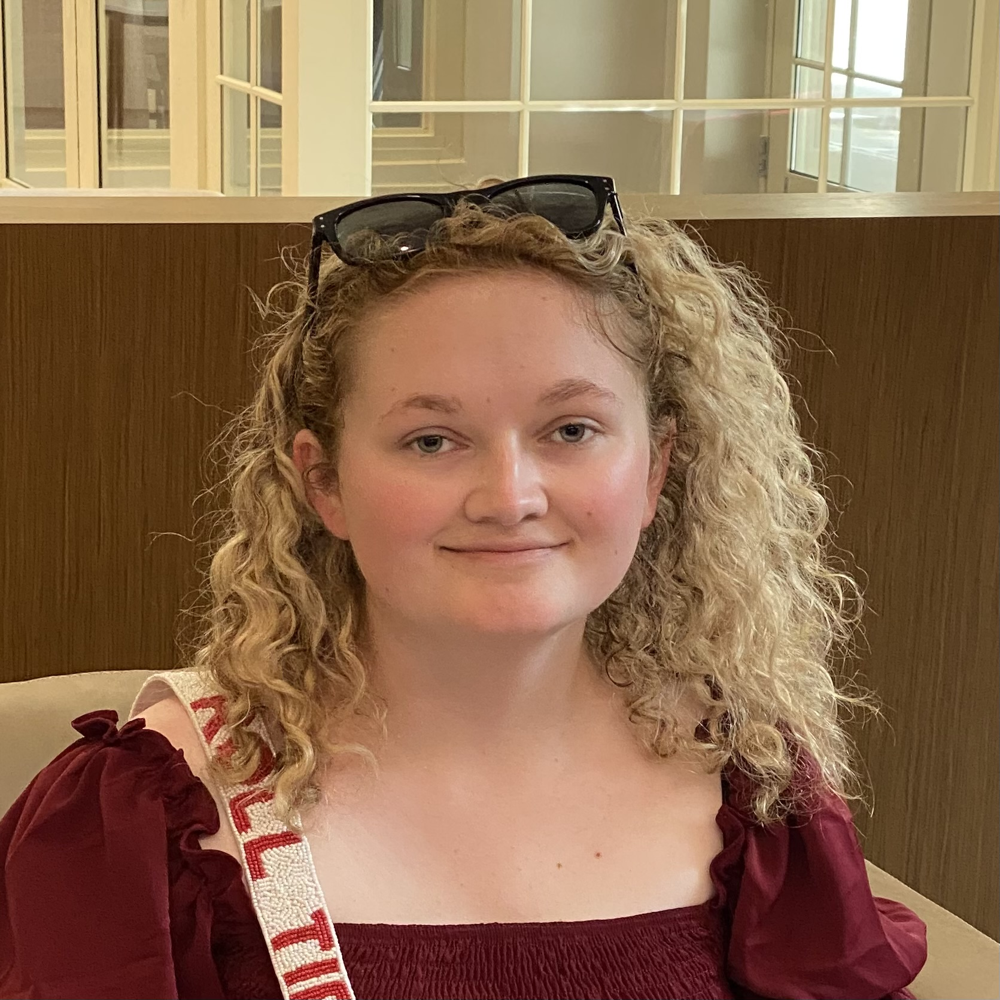

Yanyu Xiong, Ph.D.
Assistant Professor & Director, LingoBrain Lab · Department of Speech, Language and Hearing Sciences, University of Alabama
Dr. Xiong directs the LingoBrain Lab, where her research uses neuroimaging and speech-analysis methods to study how the brain processes and produces sentences and discourse — in bilinguals, clinical populations, and children. She earned her Ph.D. in Psychology, specializing in Cognitive Neuroscience, from Indiana University Bloomington (with a minor in Second Language Studies), and completed a postdoctoral fellowship in the Department of Speech and Hearing Sciences at Indiana University before joining the University of Alabama.
She currently serves as a multisite principal investigator on the NIH-funded HEALthy Brain and Child Development Study at UA, and holds additional funded projects on language biomarkers of cognitive decline and post-stroke language impairment. Her work has been published in multiple high-ranking journals.
Current lab members
Avery Gast
Language precursors in aging populations with subjective cognitive decline

Undergraduate Research Assistant · PsychologyLindsey Hotchkiss
Language precursors in aging populations with subjective cognitive decline, and building a knowledge graph of language disorders
Justice Henry
Knowledge graph of language disorders project.
 Undergraduate Research Assistant · Computer Science
Undergraduate Research Assistant · Computer Science
Girwan Dhakal
AI-driven analysis of speech acts in late-talking and stuttering children, an automatic speech recognition (ASR) project, and modeling adult-child dyadic communication using multimodal large language models.
 Undergraduate Research Assistant · Neuroscience
Undergraduate Research Assistant · Neuroscience
Savannah Sempier
Bilingual sentence processing of L1-English L2-Mandarin speakers
 Undergraduate Research Assistant · Biology
Undergraduate Research Assistant · Biology
Ava Garner
Bilingual sentence processing of L1-English L2-Mandarin speakers